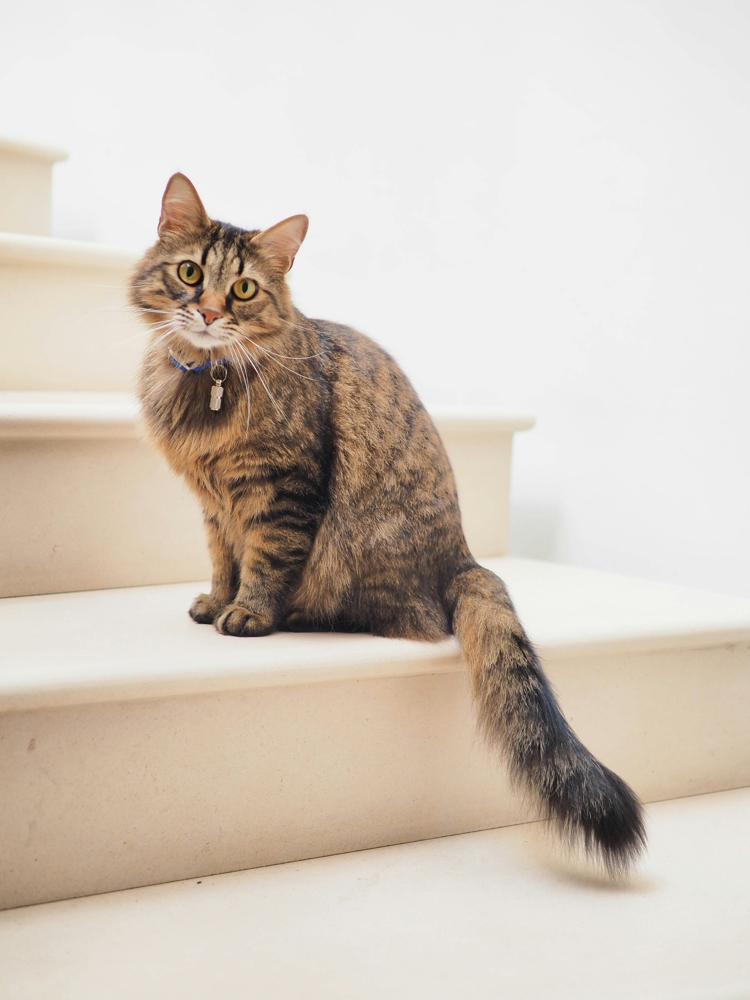

Skip to content
MeowHome
.
Home
Adopt & rehome
Find a cat
Rehome a cat
Find your match
Cat care
Beginner guides
Preparation checklist
Adoption diaries
Profile
Sign in
EN
/
繁體
Menu

Cat adoption
Find a cat
Cats for adoption
View all cats
Find your match
Cat care
Adoption diaries